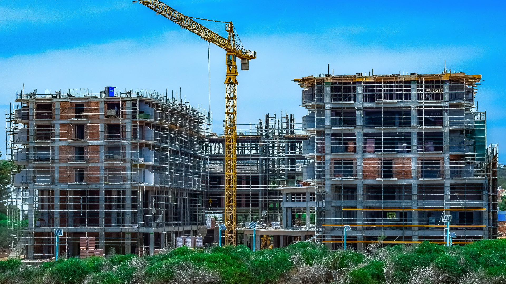
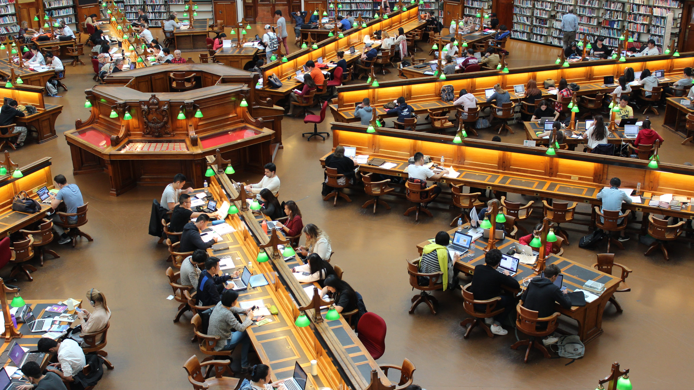

Sejarah Sekolah

Awal Berdirinya SMPN SATU ATAP 1 BANGODUA
SMPN Satu Atap 1 Bangodua berdiri pada tahun 2008 sebagai bentuk perluasan akses pendidikan di wilayah Bangodua, Kabupaten Indramayu. Awalnya sekolah ini beroperasi dengan fasilitas sederhana, namun semangat guru dan siswa yang tinggi menjadikan sekolah ini terus berkembang pesat.
Program “Satu Atap” memungkinkan siswa dari SD terdekat untuk melanjutkan ke jenjang SMP tanpa harus menempuh jarak jauh. Dengan dukungan pemerintah dan masyarakat, SMPN Satu Atap 1 Bangodua menjadi pusat pendidikan yang menanamkan nilai disiplin, religius, dan berprestasi.
Perkembangan dan Prestasi
Seiring waktu, SMPN Satu Atap 1 Bangodua terus berbenah. Penambahan ruang kelas baru, laboratorium, dan fasilitas olahraga menjadi bagian penting dalam meningkatkan kualitas belajar siswa.
Selain itu, sekolah ini juga aktif dalam berbagai lomba akademik maupun non-akademik di tingkat kecamatan dan kabupaten. Prestasi demi prestasi berhasil diraih berkat kerja keras guru dan semangat juang para siswa yang luar biasa.

Menuju Sekolah Berkarakter
Kini, SMPN Satu Atap 1 Bangodua terus berkomitmen untuk mencetak generasi yang berkarakter, unggul dalam akademik, serta memiliki kepedulian sosial tinggi. Melalui pembelajaran aktif dan berbagai kegiatan pengembangan diri, sekolah ini berupaya menjadi wadah bagi siswa untuk tumbuh menjadi pribadi yang tangguh dan berdaya saing.